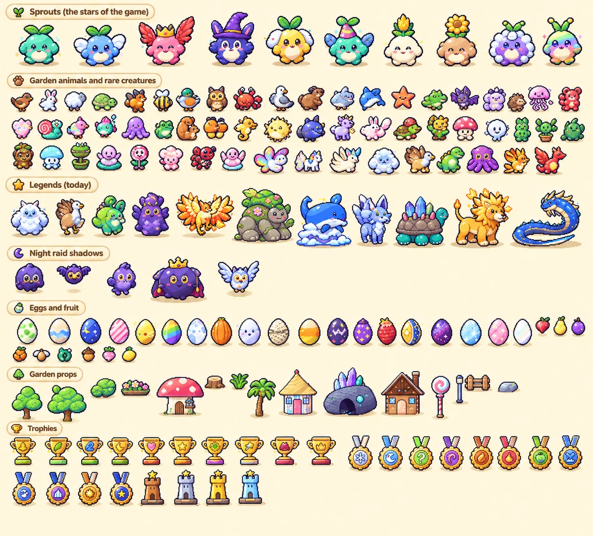
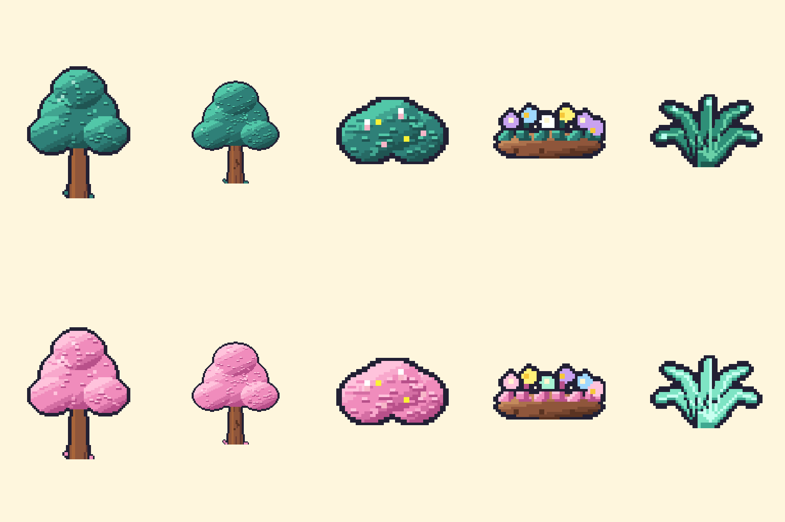

Solunar Art Requests
Pictures for ChatGPT to redraw in the Solunar Sprouts style. When they come back, send them to Claude and they go into the game.
- Save the pictures in a request: long-press each one on a phone or iPad, or right-click it on a computer.
- In ChatGPT, start a new message, attach the style reference first and then the request's template, and paste its prompt (Copy button).
- One request per message. Send the finished picture back to Claude in your Solunar chat.
Moonlit Grove and Candy Isle plants
Blue trees with glowing golden fruit for the Moonlit Grove and pink cotton-candy trees for Candy Isle, like your garden mockups. Top row is Moonlit, bottom row is Candy.


Image 1 is the STYLE REFERENCE (the refined Solunar Sprouts sprite sheet). Image 2 is a TEMPLATE SHEET of garden plants. Create ONE new image that redraws every plant on the template in the established Solunar Sprouts master art direction: - Top row = Moonlit Grove plants: deep blue and violet foliage with small glowing golden fruit and a soft magical glow. - Bottom row = Candy Isle plants: fluffy pink cotton-candy foliage with pastel sprinkles. - Keep each plant's type and shape (tree, big tree, bush, flower bed, fern) so it fits the same spot in the game. - Kawaii 16-bit-inspired pixel art with crisp pixel clusters and clean dark outlines. Add depth through carefully placed highlights and shadows. - Match the style reference's pixel density, outline thickness, colour harmony and shading. No smooth vector graphics, 3D rendering, blurry edges or generic AI illustration look. Layout rules (very important): - Keep exactly 10 plants, in exactly the same grid positions and order as the template: one per cell, centered, roughly the same size, with clear empty space around each. - Flat, plain cream background (#FEF6DD) across the whole image. - No text, numbers, labels, frames, borders, ground shadows or extra items. - Size 1536 × 1024, landscape.
Beach, Moonlit and Candy extras
The new things in your mockups that the garden doesn't have yet. This one needs no template: attach only the style reference.
The attached image is the STYLE REFERENCE (the refined Solunar Sprouts sprite sheet). Create ONE image: a sprite sheet of 12 garden props in a 4 × 3 grid, in this exact order: Row 1: beach umbrella (red and white), sandcastle, seashell, beach ball Row 2: glowing crystal cluster, mossy standing stone, glowing blue mushrooms, glowing lantern Row 3: candy cane, cupcake, gumball machine, pile of gumdrops - Kawaii 16-bit-inspired pixel art with crisp pixel clusters and clean dark outlines, matching the reference's pixel density, palette, outline thickness and shading. - No smooth vector graphics, 3D rendering, blurry edges or generic AI illustration look. Layout rules (very important): - Exactly 12 items, one per cell, centered, with clear empty space around each. - Flat, plain cream background (#FEF6DD) across the whole image. - No text, numbers, labels, frames, borders, ground shadows or extra items. - Size 1536 × 1024, landscape.
If a result is missing items or they've moved around, ask ChatGPT to try again with "Keep every item from the template, in the same grid positions." A missing item can't be matched to the game.